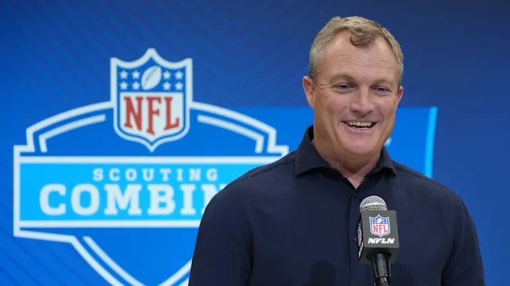

By Chris Schad
Published May 13,2025
The San Francisco 49ers have entered the bulk of their offseason program and a time-honored tradition is overreacting to how rookies look during workouts. For the 49ers, that may not happen this year as first-round draft pick Mykel Williams has already been worth the hype.
Williams made people notice him immediately when he stood out during last week's rookie minicamp. But it was more of a Bigfoot sighting since there weren't many highlights from the event. Luckily for 49ers faithful, some video emerged and it should leave everyone excited about what the Georgia product could become when the games count.
The highlight came from the NFL's TikTok account last weekend. Lining up in a drill during rookie minicamp, Williams took off and bowled over one of the assistant coaches. While this wasn't a full-grown offensive lineman, it still could create some buzz as Williams enters the offseason program.
Williams was the 11th overall pick by the 49ers during last month's draft after a productive career in Athens. He racked up 67 total tackles, including 21.5 for loss and 14 sacks during his three years with the Bulldogs and was named a Second Team All-SEC in each of this final two seasons. While Williams has some refining in his technique, his 82 7/8" wingspan and 6-foot-5, 260-pound frame provide a solid starting point coming into the NFL.
The 49ers saw this and attempted to trade up for Williams during the draft. While they were turned down by the Carolina Panthers, they still got their guy to pair with Nick Bosa. Bosa has collected 62.5 sacks since entering the NFL in 2019 but San Francisco had issues finding someone to take the pressure off of him as 2022 second-round pick Drake Jackson’s career was derailed by a knee injury.
Manhandling coaches still isn’t going to get some people on board but good practice habits are a strong foundation. If Williams can tackle his technique issues, he’ll be slamming quarterbacks to the ground this fall.